Mes applications maison, en accès direct : outils, jeux, prototypes. Tout ce qui sort de l'atelier AutomaTeam en dehors des projets clients atterrit ici — certains se jouent tout de suite dans le navigateur, d'autres se téléchargent.
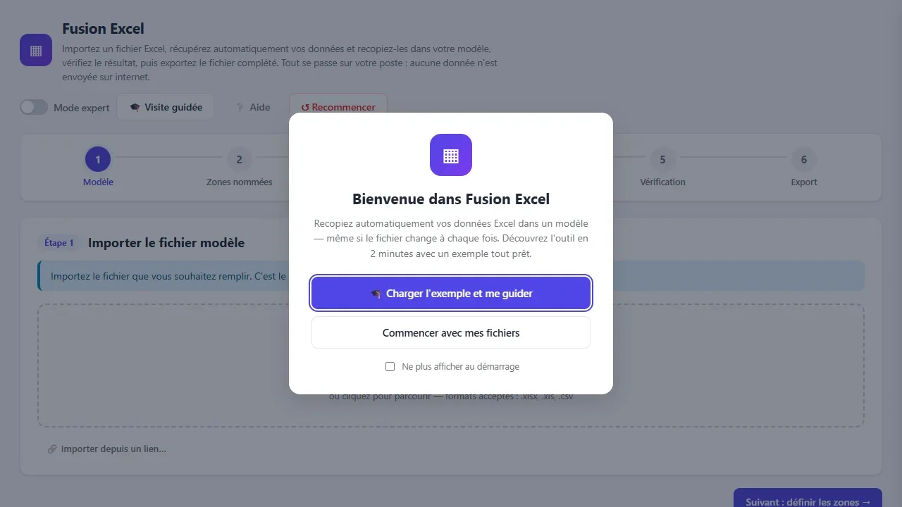
Remplit vos modèles Excel automatiquement à partir de n'importe quel fichier source, sans code et sans envoyer vos données sur internet.
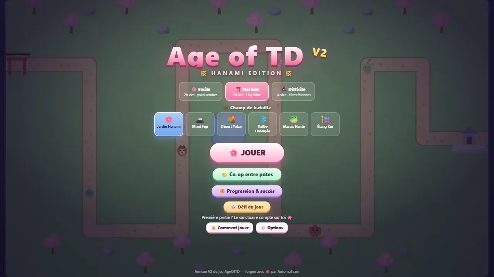
Tower defense arcade complet en Canvas 2D : 50 vagues, 4 âges, 22 yokai, héros persistant, et un co-op temps réel jusqu'à 6 joueurs.
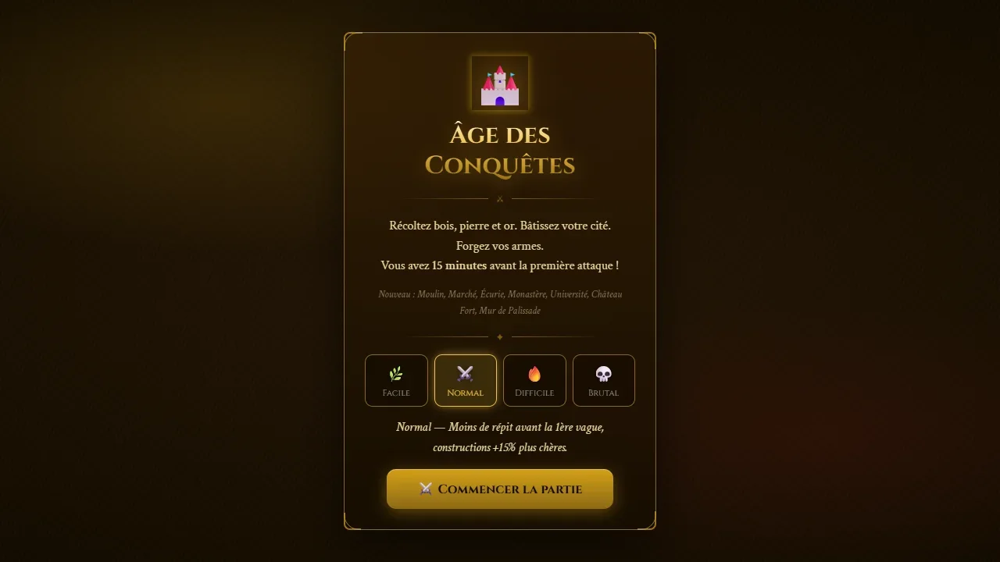
City-builder / RTS façon Age of Empires en Canvas 2D : 4 âges, 15 bâtiments, 9 unités et 20 vagues d'ennemis à repousser.
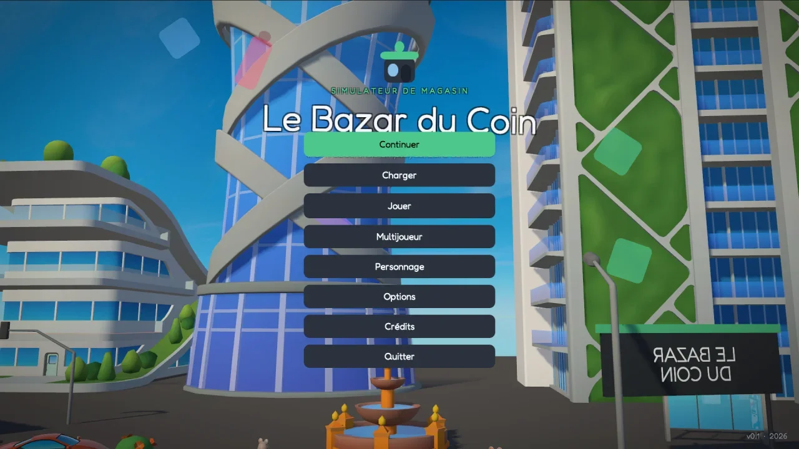
Le Bazar du Coin — un simulateur de gestion de magasin façon Supermarket Simulator, en Unity. Boucle de gestion complète, encore à roder.
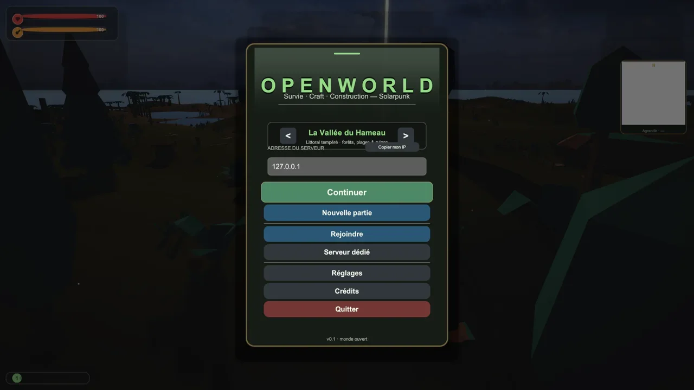
Survivalcraft à la première personne en monde ouvert : récolte, craft, construction, météo et cycle jour/nuit, en co-op réseau.
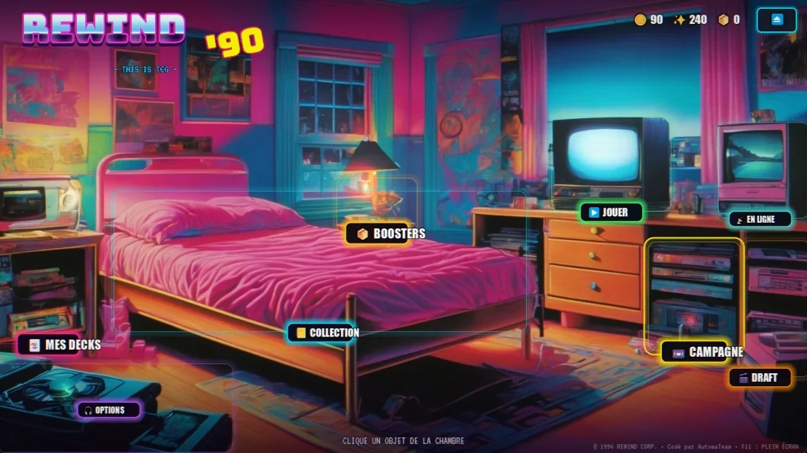
Jeu de cartes à collectionner sur les années 90 : 6 factions, 341 cartes, campagne et draft.
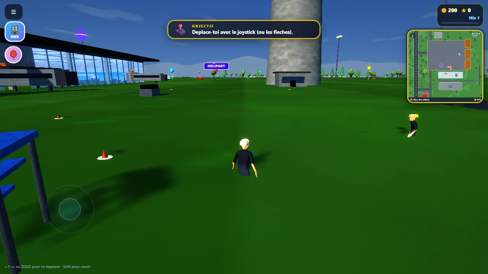
Simulateur aéronautique multirôle en 3D, sans installation, pensé pour iPad.
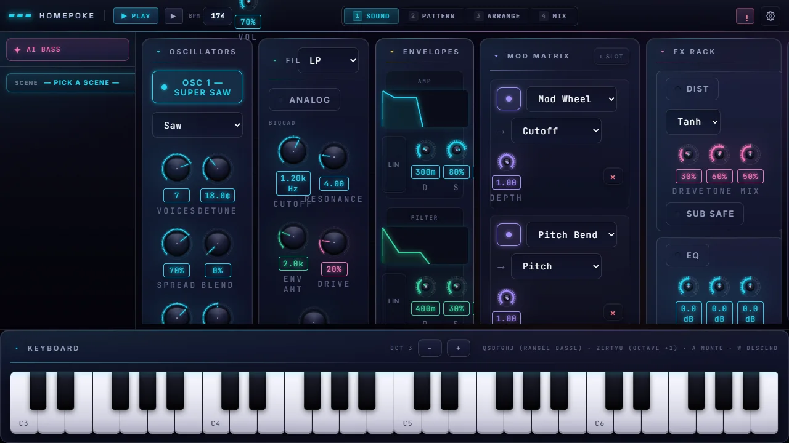
Synthé web « VST-style » pour grosses basses Drum & Bass, avec mini-DAW intégré.
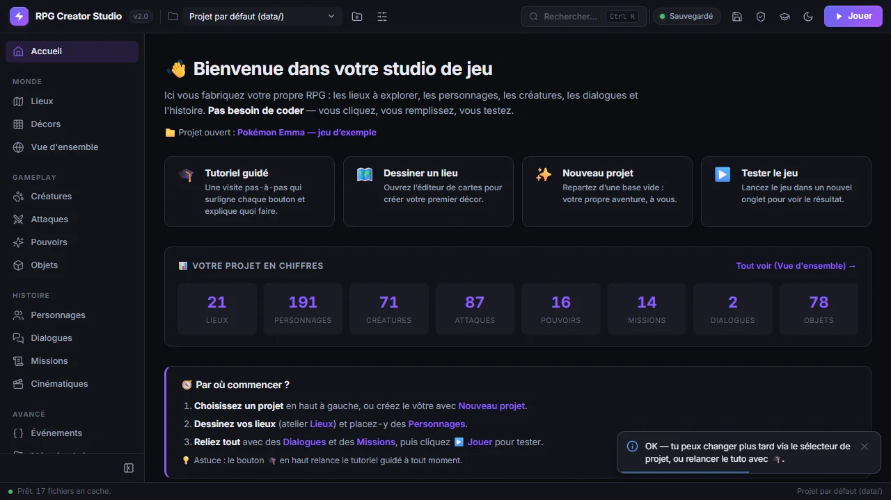
Crée ton propre JRPG sans écrire une ligne de code : 13 éditeurs visuels dans le navigateur.
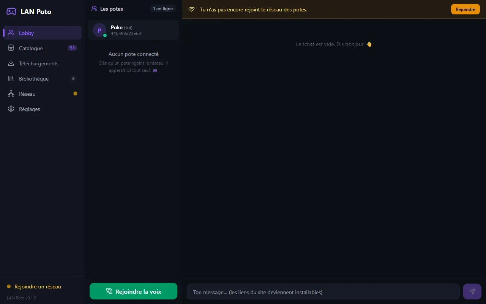
Des sessions LAN entre potes à distance, 100 % P2P, sans serveur cloud.
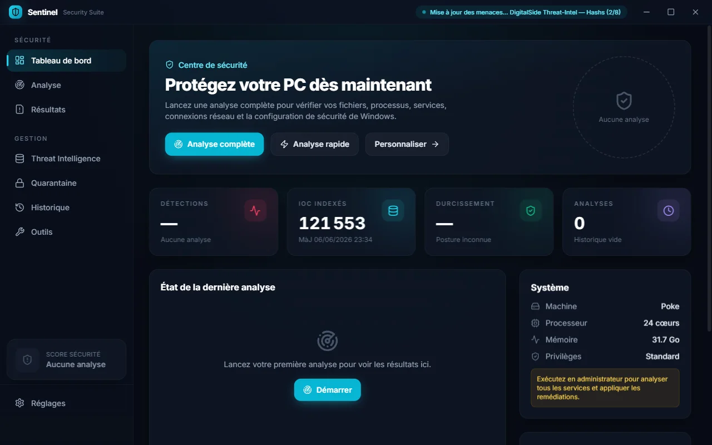
Suite de sécurité PC locale, hors-ligne et ultra-paramétrable.
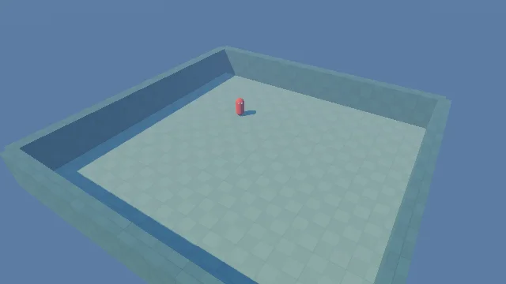
Crée des jeux 3D multijoueurs sans coder, avec un assistant IA.
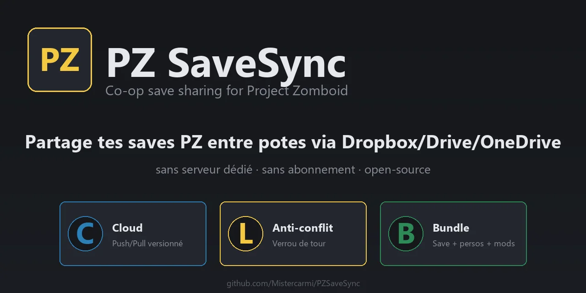
Partage ta save Project Zomboid avec tes potes en 2 clics.
Optimiseur système pour Age of Empires II : Definitive Edition, avec analyseur live.

Importe un morceau, l'IA sépare les pistes et le remixe en Drum & Bass.
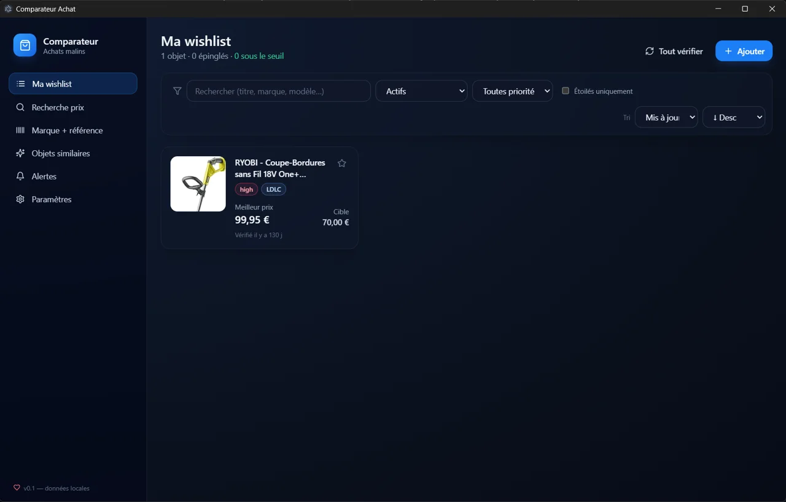
Wishlist intelligente avec comparaison de prix en parallèle et alertes.
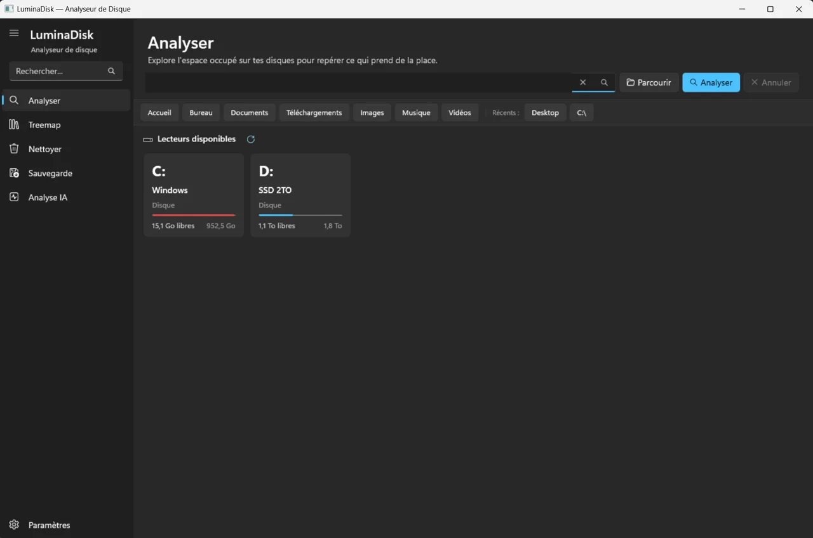
Nettoyage de PC et sauvegarde avant réinstallation de Windows.
Surveille RAM, CPU et température, et nettoie la mémoire sans fermer d'application.

Un cockpit unique pour lister, lancer et suivre tous tes projets Claude Code.

Gère ton compte GitHub sans ligne de commande.